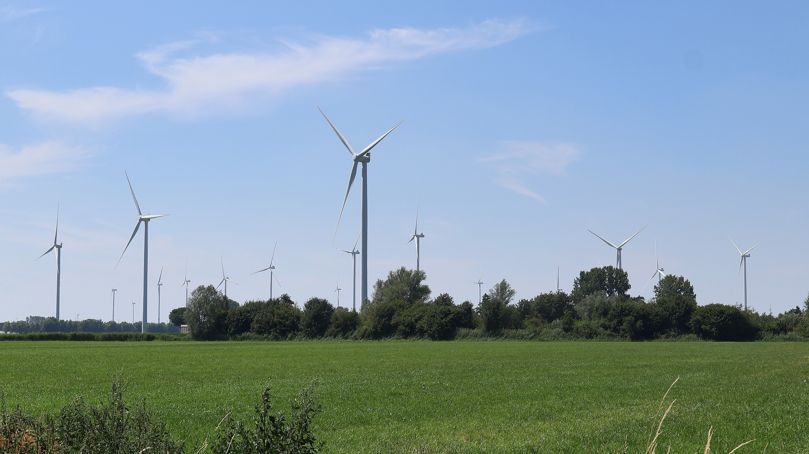

Gale
Turbines
Crews
Pricing
Log in
Book a demo
Turbine 7 stopped at 14:02.
You knew at 14:02
Gale tells your crew what broke and which part to carry out to the turbine.
Book a demo
30 minutes on your own farm’s
faults from last month
T7
yaw motor, stopped 14:02
Galder field, 9 turbines
output today, MW
Rhys and Elin, van 3
18 min to T7
bring yaw motor 4.2 kW